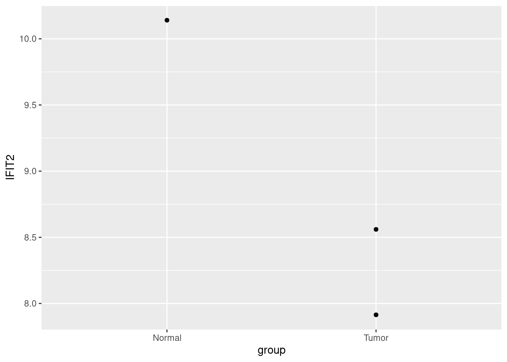

tidy_rowSums = function(df, name, con = where(is.numeric)) {
con = enquo(con)
df[[name]] = rowSums(select(df, !!con))
return(df)
}
iris |>
tidy_rowSums('sum') |>
as_tibble()
## # A tibble: 150 × 6
## Sepal.Length Sepal.Width Petal.Length Petal.Width Species sum
## <dbl> <dbl> <dbl> <dbl> <fct> <dbl>
## 1 5.1 3.5 1.4 0.2 setosa 10.2
## 2 4.9 3 1.4 0.2 setosa 9.5
## 3 4.7 3.2 1.3 0.2 setosa 9.4
## 4 4.6 3.1 1.5 0.2 setosa 9.4
## 5 5 3.6 1.4 0.2 setosa 10.2
## # ℹ 145 more rowsuseR
前言
本册为Vinnish的个人R语言编码案例分享. 本册假定读者具有一定的编程经验, 并且对R中的常用函数, R文件操作较为熟悉.
推荐阅读:
为什么要用R?
‘为什么要用R?’
这不是疑问句, 这是反问句. 2025年, 大模型热潮, Python作为人工智能语言无疑是更好的选择. 但是又是什么让Python比R更受欢迎呢? 比较Python与R, 我们会发现在控制语句上两者十分接近, 包管理方式也十分接近, 或者说现代编程语言彼此之间的共性远大于差异. 区别在于细微的语法差异, 使用者群体的数量与风格, 核心管理团队的定位与发展计划等. 琐碎的区别日积月累后, 造成了不同语言社区的巨大差异. Python在各行各业都大放光彩, R却只局限于统计与文件操作(这不意味着Python能做的事R做不了, 只是要付出无用功). 具体而言, R落后的原因包括:
- 表达式被滥用, 不利于静态分析;
- 混乱的, 迟迟出现的面向对象方法;
- 混乱的包管理与命名规范;
然而, 表达式泛滥, 表示用户可以使用表达式简单的实现各种实用的元编程模板, 让用户可以写代码写的飞快; 面向对象基础薄弱, 意味着用户只需要爽写函数就可以了; 在快速开发, 原型实现与探索性数据分析中, 上述缺点都是R在当下无可替代的理由. 更何况R中还有浩瀚如海班的历史方法可以实用.
编程语言只是实现想法的工具, 在想象的领域, 您可以信马由缰.
现代的R
Rstudio公司(现名Posit)为R语言做出了无比的贡献, 其为R贡献了各种实用又现代的软件包, 引入现代编程任务与框架. 甚至说, 通过对原版R(base R)中各种功能的封装或改良, 将R改良为了一门新的语言–tidy R(’Q’语言或者’P’语言? ).
但是我们也需要注意到, tidy R中多数功能是对base R的封装, 也就意味着base R中同样能实现. 由于tidy R的框架性, tidy R在一系列任务中如鱼得水的同时, 没能覆盖到另一些任务上, 比如在tidy R框架下对一个数据框中, 计算每一行中所有数值相加的结果. tidy R中并非不能进行, 但是效率与丑陋的实现可能都令人难以接受. 这就要求我们同时也要对tidy R是如何封装base R的有所了解.
在快速的原型开发阶段, 私有以下建议:
- 成为tidy R高手, 更是base R高手
- 用新不用旧:
- tibble而不是data.frame
- map而不是lapply
- R6而不是S4
- 除迫不得已外不行名索引
- 除矩阵运算外不使用矩阵
“数据框”思维
数据框(data.frame)是R中基础的数据结构之一. “数据框”思维即是指在R中把我们需要完成的任务通过转化为我们最熟悉的数据结构–数据框, 把陌生的问题转换为熟悉的问题并加以逐步解决. 数据框是列表的特殊形式. 有关R中的数据结构, 详情见R语言高手计划.
dataframe与tibble
vec_1 = 1:3
vec_2 = 4:6
lst_raw = list(a = vec_1, b = vec_2)
df_raw = data.frame(a = vec_1, b = vec_2)
lst_from_df = as.list(df_raw)
df_from_lst = as.data.frame(lst_raw)
identical(lst_raw, lst_from_df)
## [1] TRUE
identical(df_raw, df_from_lst)
## [1] TRUE数据框可以看作等长向量组成的列表. 如果向量不等长, 或者包含不是向量的列, 则会得到意想不到(unexpected)的结果, 所以尽量不应该尝试用原生data.frame装列表.
vec_1 = 1:3
vec_2 = 4:7
df_unequal_length = tryCatch(data.frame(a = vec_1, b = vec_2), error = \(e) e)
df_contains_lst = data.frame(a = vec_1, b = as.list(vec_1))
df_unequal_length
## <simpleError in data.frame(a = vec_1, b = vec_2): arguments imply differing number of rows: 3, 4>
df_contains_lst
## a b.1L b.2L b.3L
## 1 1 1 2 3
## 2 2 1 2 3
## 3 3 1 2 3tibble是特殊形式的数据框, 与原生的data.frame的不同之处在于:
- 控制台打印出来更好看;
- 抛弃了列名;
- 可以以列表作为一列;
- 其它;
vec_1 = 1:3
vec_2 = 4:6
df_raw = data.frame(a = vec_1, b = vec_2)
tb_raw = tibble(a = vec_1, b = vec_2)
tb_lst = tibble(a = vec_1, b = as.list(vec_2))
rownames(df_raw) = c('a', 'b', 'c')
rownames(tb_raw) = c('a', 'b', 'c')
## Warning: Setting row names on a tibble is deprecated.
df_raw
## a b
## a 1 4
## b 2 5
## c 3 6
tb_raw
## # A tibble: 3 × 2
## a b
## * <int> <int>
## 1 1 4
## 2 2 5
## 3 3 6
tb_lst
## # A tibble: 3 × 2
## a b
## <int> <list>
## 1 1 <int [1]>
## 2 2 <int [1]>
## 3 3 <int [1]>以转录组数据分析为例
在实际工作里, 我们可能要处理一些基因表达数据. 于是我们打开了UCSC Xena, 下载了别人的预制数据. 我们惊喜的发现第一列是一列数字, 这是基因的ENTREZ ID而不是我们熟悉的Symbol. 我们需要将其转换为熟悉的Symbol.
所幸我们还有一个map数据, 其内包含了ENTREZ ID与Symbol的对应关系.
df_expr = read_tsv('examples/expr.tsv') |>
mutate(sample = as.character(sample))
df_expr
## # A tibble: 22,583 × 4
## sample `TCGA-FV-A495-01` `TCGA-G3-A3CH-11` `TCGA-CC-A3MB-01`
## <chr> <dbl> <dbl> <dbl>
## 1 55160 11.2 11.0 11.2
## 2 64344 5.25 5.38 4.00
## 3 56163 4.20 0 0
## 4 9921 11.5 11.7 12.1
## 5 26994 9.60 11.4 9.82
## # ℹ 22,578 more rows
df_map = read_tsv('examples/probemap.tsv') |>
mutate(ENTREZID = as.character(ENTREZID))
df_map
## # A tibble: 17,330 × 2
## SYMBOL ENTREZID
## <chr> <chr>
## 1 ARHGEF10L 55160
## 2 HIF3A 64344
## 3 RNF17 56163
## 4 RNF10 9921
## 5 RNF11 26994
## # ℹ 17,325 more rows如我们熟悉的那样, 转录组数据一般以基因作为行名, 样本作为列名, 这继承自过去转录组对照试验样本量较小的特点. 然而在这里, 我们将只是用最简单, 最基础的思路, 以’数据框’的形式处理经典的转录组分析任务.
如果你已经读过了前言中提及的书目, 你可能会有以下两种方案:
- 连接表;
full_join(df_map, df_expr, c('ENTREZID' = 'sample'))
## # A tibble: 22,586 × 5
## SYMBOL ENTREZID `TCGA-FV-A495-01` `TCGA-G3-A3CH-11` `TCGA-CC-A3MB-01`
## <chr> <chr> <dbl> <dbl> <dbl>
## 1 ARHGEF10L 55160 11.2 11.0 11.2
## 2 HIF3A 64344 5.25 5.38 4.00
## 3 RNF17 56163 4.20 0 0
## 4 RNF10 9921 11.5 11.7 12.1
## 5 RNF11 26994 9.60 11.4 9.82
## # ℹ 22,581 more rows- 字典;
table_entrez2symbol = df_map |> pull(SYMBOL, ENTREZID)
table_entrez2symbol[1:3]
## 55160 64344 56163
## "ARHGEF10L" "HIF3A" "RNF17"
df_maped = df_expr |>
mutate(sample = table_entrez2symbol[sample])
df_maped
## # A tibble: 22,583 × 4
## sample `TCGA-FV-A495-01` `TCGA-G3-A3CH-11` `TCGA-CC-A3MB-01`
## <chr> <dbl> <dbl> <dbl>
## 1 ARHGEF10L 11.2 11.0 11.2
## 2 HIF3A 5.25 5.38 4.00
## 3 RNF17 4.20 0 0
## 4 RNF10 11.5 11.7 12.1
## 5 RNF11 9.60 11.4 9.82
## # ℹ 22,578 more rows在高维矩阵里, 人们习惯将行作为样本, 列作为特征, 所以我们应该对这个列表进行一次转置(transpose). 我们试图直接使用t函数操作这个数据框, 结果很不理想:
df_maped |> t() |> as_tibble()
## Warning: The `x` argument of `as_tibble.matrix()` must have unique column names if
## `.name_repair` is omitted as of tibble 2.0.0.
## ℹ Using compatibility `.name_repair`.
## # A tibble: 4 × 22,583
## V1 V2 V3 V4 V5 V6 V7 V8 V9 V10 V11 V12 V13
## <chr> <chr> <chr> <chr> <chr> <chr> <chr> <chr> <chr> <chr> <chr> <chr> <chr>
## 1 ARHGE… "HIF… "RNF… RNF10 "RNF… "RNF… GTF2… "REM… "MTV… "RTN… <NA> <NA> "FGF…
## 2 11.18… " 5.… " 4.… 11.5… " 9.… " 9.… 11.8… " 5.… " 0.… " 8.… "11.… " 0.… " 7.…
## 3 11.01… " 5.… " 0.… 11.6… "11.… "10.… 11.5… " 3.… " 1.… " 7.… " 9.… " 0.… " 8.…
## 4 11.24… " 4.… " 0.… 12.0… " 9.… "10.… 12.1… " 3.… " 0.… " 7.… " 8.… " 0.… " 8.…
## # ℹ 22,570 more variables: V14 <chr>, V15 <chr>, V16 <chr>, V17 <chr>,
## # V18 <chr>, V19 <chr>, …糟糕的事情有三件:
- tibble中取消了列名, 所以我们没法把Symbol挪走, 他会随数值一起转置, 并且把所有列的类型都变成字符串;
- 数据结构不再是tibble/data.frame了, 而是矩阵, 所以我们需要用as_tibble将其重新变为tibble;
- 但如同之前所说, tibble没有行名, 所以原来的列名变成行名以后又被tibble删除了;
所以我们需要写一个自定义函数来解决这件事情:
tidy_t = function(df, id_new, id_old = colnames(df)[[1]]) {
df |>
column_to_rownames(id_old) |> # 有的时候我们还是要向过去妥协的~
t() |>
as_tibble(rownames = id_new)
}
tryCatch(tidy_t(df_maped, 'sample'), error = \(e) e)
## <simpleError in `.rowNamesDF<-`(x, value = value): duplicate 'row.names' are not allowed>怎么还是不行呢? 根据报错信息, 我们可以知道出在column_to_rownames, 它尝试把id_old(sample)这一列变为数据框的行名, 并且返回一个带行名的df而不是tb, 但是因为有的基因名是重复的, 所以我们把它作为列名以前, 需要去除重复的部分. 尽管我们可以使用函数distinct去除某一列中重复的部分, 但是我们并不知道它是按什么规则去除行的, 也不知道这个规则是否合适.
让我们再来设计一个函数! 对样本进行取平均/最大/最小都是合适的, 而且还要考虑到有的基因没有重复, 我们只要计算那些重复了的基因就好了, 这样还提高了效率.
merge_expression = function(df, by, symbol = 'symbol') {
match.arg(by, c('max', 'min', 'mean'))
symbol_duplicated = df[[symbol]][duplicated(df[[symbol]])]
if (length(symbol_duplicated) != 0) {
df_remain = df[!df[[symbol]] %in% symbol_duplicated, ]
df_patch = df[df[[symbol]] %in% symbol_duplicated, ]
lst_patch = split(df_patch[, -1], df_patch[[symbol]])
if (by == 'max') {
df_patched = lst_patch |>
map(~ .x |> map(max)) |>
bind_rows()
} else if (by == 'min') {
df_patched = lst_patch |>
map(~ .x |> map(max)) |>
bind_rows()
} else if (by == 'mean') {
df_patched = lst_patch |>
map(~ .x |> map(max)) |>
bind_rows()
}
df_patched = df_patched |>
mutate(symbol = names(lst_patch)) |>
relocate(symbol)
colnames(df_patched) = colnames(df_remain)
df = bind_rows(df_remain, df_patched)
}
return(df)
}
df_perfect = df_maped |>
merge_expression('mean', 'sample') |>
tidy_t('sample')
df_perfect
## # A tibble: 3 × 17,328
## sample ARHGEF10L HIF3A RNF17 RNF10 RNF13 GTF2IP1 REM1 MTVR2 RTN4RL2 FGFR1OP2
## <chr> <dbl> <dbl> <dbl> <dbl> <dbl> <dbl> <dbl> <dbl> <dbl> <dbl>
## 1 TCGA-F… 11.2 5.25 4.20 11.5 9.63 11.8 5.68 0 8.75 7.68
## 2 TCGA-G… 11.0 5.38 0 11.7 10.8 11.5 3.54 1.47 7.91 8.75
## 3 TCGA-C… 11.2 4.00 0 12.1 10.6 12.1 3.56 0 7.98 8.29
## # ℹ 17,317 more variables: TSKS <dbl>, ATRX <dbl>, PMM2 <dbl>, ASS1 <dbl>,
## # NCBP1 <dbl>, ZNF709 <dbl>, …就这样, 在我们的努力之下, 我们得到了我们想要的结果. 下面我们想比较正常样本与肿瘤样本中某个基因的表达. 根据TCGA的命名规则, 以11结尾的是癌旁组织的, 01结尾则是原位肿瘤.
df_perfect |>
select(sample, IFIT2) |>
mutate(group = ifelse(str_ends(sample, '11'), 'Normal', 'Tumor')) |>
ggplot() +
geom_point(aes(group, IFIT2))
以上是一个将经典的转录组数据转换为数据框并使用最为基础简单的思路处理的案例. 专业的, 经典的, 受到业界承认的工具固然重要, 然而如果对于所要进行的任务有具体的认识, 能用简单的语言清晰的描述它, 那么专业的工具的功能也能实现的七七八八了.
总结
- 数据框是R中基本而强大的数据结构之一, 数据框思维是指将任务转换为熟悉的数据结构逐步解决, 并非指只是用数据框解决问题;
- tibble解决了原生dataframe中的一些遗留问题, 但是tibble并不是万能的, 在灵活应用tibble的特点的同时, 我们也需要认识并避免tibble与dataframe转换带来的副作用;
实用的表达式
在现代编程语言在语言发明者介绍这门语言时往往会区分表达式(expression)与语句(statement)的概念. 但是在实际使用一门语言时往往很难区分. 一般定义表达式为能够返回值的语句, 因为表达式可被求值, 所以它可写在赋值语句等号的右侧, 譬如:
tryCatch(a = for, error = \(e) e) # 这段代码根本无法被R解释器识别, 是看起来成立的非法语句Lisp语言是不区分表达式和语句, R继承了Lisp诸多特征, 包含惰性求值, 也包含不区分表达式的特点, 所以可以认为一切R代码都是表达式.
# 有的时候我们可以这么写(很不推荐)
a = if (T) 1
a
## [1] 1惰性求值: 函数式的极意
我们都很熟悉R中的管道符|>或者%>%, 前者原生于R中, 后者是tidy R提供的一个中缀函数(如同%in%). 下都以|>为例.
|>将原先嵌套的函数展开, 内在前, 外在后, 或者说把|>之前的对象, 传递给|>之后的函数的第一个参数. 我们可以用substitute捕获转换后的表达式, 并且注意到它内在前外在后的特点.
substitute(
iris |>
tidy_rowSums('sum') |>
as_tibble()
)
## as_tibble(tidy_rowSums(iris, "sum"))但是要清晰|>乃至R中表达式的性质, 我们仍需要回答:
问题一: 请问下列代码的执行顺序是如何的? 是不是先把iris这个数据框进行累加, 然后将其转换为tibble的?
iris |>
tidy_rowSums('sum') |>
as_tibble()问题二: 已知stop会抛出一个错误从而报错, 那么以下这个函数是会报错还是返回一个1?
f = function(value = stop('Error! ')) {
return(1)
}
f()亲自运行问题二的代码后, 我们会惊讶的发现, 居然没有报错! 这是因为R中在函数传参时应用惰性求值的性质, 函数的参数在被评估(eval)之前都以表达式的形式呈现. 这一特征在R中尤其重要(这并不意味着别的语言没有惰性求值, 但是肯定不如R中应用的如此广泛以至于泛滥), 通过比较R与Python中两个同构的函数, 我们很容易发现区别:
R(参数惰性求值, 外面的函数的内容先打印出来):
f_inner = function(x) {
print('inner')
return(x)
}
f_outer = function(x) {
print('outer')
return(x)
}
res = f_outer(f_inner(1))
## [1] "outer"
## [1] "inner"Python(参数立即求值, 里面的函数的内容先打印出来):
def f_outer(x):
print('outer')
return x
def f_inner(x):
print('inner')
return x
res = f_outer(f_inner(1))
## inner
## outer基于R中函数惰性求值的性质, 我们能够实现许多有意思的函数. 其中最重要的即为延迟评估(或称非标准评估, NSE). 正如之前所提到的”数据框”思维, R中的面向对象系统多是通过简单的数据结构+函数实现的(S3系统). 函数在R中的主导地位与原生惰性求值的构成了R的绝大部分. 对延迟评估的创造性发展又是tidy R的绝大部分.
延迟评估与环境
Sepal.Length与Petal.Length都是iris的一列. tidy R中我们可以如下进行文件操作:
as_tibble(iris)
## # A tibble: 150 × 5
## Sepal.Length Sepal.Width Petal.Length Petal.Width Species
## <dbl> <dbl> <dbl> <dbl> <fct>
## 1 5.1 3.5 1.4 0.2 setosa
## 2 4.9 3 1.4 0.2 setosa
## 3 4.7 3.2 1.3 0.2 setosa
## 4 4.6 3.1 1.5 0.2 setosa
## 5 5 3.6 1.4 0.2 setosa
## # ℹ 145 more rows
iris |>
mutate(SP_Length = Sepal.Length + Petal.Length) |>
as_tibble()
## # A tibble: 150 × 6
## Sepal.Length Sepal.Width Petal.Length Petal.Width Species SP_Length
## <dbl> <dbl> <dbl> <dbl> <fct> <dbl>
## 1 5.1 3.5 1.4 0.2 setosa 6.5
## 2 4.9 3 1.4 0.2 setosa 6.3
## 3 4.7 3.2 1.3 0.2 setosa 6
## 4 4.6 3.1 1.5 0.2 setosa 6.1
## 5 5 3.6 1.4 0.2 setosa 6.4
## # ℹ 145 more rows但如果我们直接让它们相加就会报错:
tryCatch(Sepal.Length + Petal.Length, error = \(e) e)
## <simpleError in eval(expr, envir): object 'Sepal.Length' not found>我们需要指定Sepal.Length与Petal.Length的来源才能进行相加, 如iris$Sepal.Length + iris$Petal.Length. 那么上述tidy R中是如何实现让这个表达式先不要求值, 而是待指定这两个变量属于的环境之后再求值的呢? 答案就是延迟评估与对环境的利用!
上面提到参数在未评估也没有被substitute这种函数捕获前也是表达式, 但是这种表达式没有一个具体的名字. 从实用的角度来说, 我们可以这样区分:
- 激活的表达式, 如直接执行
x+y - 沉默的表达式, 被捕获的表达式
substitute(x+y)或者字符串经过解析(parse)后parse(text = 'x+y')
激活的表达式性质不稳定, 一触即发, 沉默的表达式性质稳定, 可以想放到哪里就放到哪里, 想什么时候激活就什么时候激活. 我们使用eval函数激活表达式.
tryCatch(x+y, error = \(e) e) # 一触即发
## <simpleError in eval(expr, envir): object 'x' not found>
expr_xy = substitute(x+y)
expr_xy
## x + y
substitute(x+y) == parse(text = 'x+y') # 二者等价
## [1] TRUE
tryCatch(eval(expr_xy), error = \(e) e) # 触发它
## <simpleError in eval(expr_xy): object 'x' not found>所有与eval相关的函数往往都会有一个名为envir的参数, 它表示环境(environment), 决定这个表达式被执行时所处的环境. 环境, 作用域, 命名空间的概念十分接近, 或者说其都是对环境的利用, 详细请见Advanced R中相关章节, 或者其它更为直观的讲解, 如一些个人博客. 作为现代编程语言的共同特点之一, 其相当普遍. 下文仅略述R中的环境特点与简易实现.
R中列表与环境关系密切, 可以相互转换, 而数据框又是一种特殊的列表, 所以数据框总是可以作为一个环境:
lst_xy = list(x = 1, y = 2)
env_xy = list2env(lst_xy) # 使用list2env转换为环境
env_xy
## <environment: 0x559e94f98f80>
as.list(env_xy) # 使用as.list转换回列表
## $y
## [1] 2
##
## $x
## [1] 1
expr_xy = substitute(x+y)
eval(expr_xy, envir = lst_xy)
## [1] 3
eval(expr_xy, envir = env_xy) # 列表与环境在此通用
## [1] 3
eval(substitute(Sepal.Length + Petal.Length), envir = iris)[1:5] # 数据框也很自然
## [1] 6.5 6.3 6.0 6.1 6.4接下来让我们简单的实现tidy R中的mutate方法:
modify_column = function(df, ...) {
# 需要注意的是不定参数中的多个表达式不可以简单的通过substitute捕获
# 但是可以先通过list包裹起不定参数
# 意味着我们可以直观的将其转为字符串后再编码
# tidy R中有更简单的方法(位于rlang包中), 不用的话也有更好的方法, 但是没有比这更直观的了
# Browse[1]> as.character(lst_expr)
# [1] "list"
# [2] "Sepal.Length + Petal.Length"
# [3] "Sepal.Width + Petal.Width"
lst_expr = substitute(list(...))
lst_str = setNames(as.character(lst_expr), names(lst_expr))[-1]
# Browse[1]> lst_str
# SP_Length
# "Sepal.Length + Petal.Length"
# SP_Width
# "Sepal.Width + Petal.Width"
lst_expr = map(lst_str, ~ parse(text = .x))
for (i in seq_along(lst_expr)) {
name = names(lst_expr)[[i]]
expr = lst_expr[[i]]
df[[name]] = eval(expr, envir = df)
}
return(df)
}
iris |>
modify_column(SP_Length = Sepal.Length + Petal.Length,
SP_Width = Sepal.Width + Petal.Width) |>
as_tibble()
## # A tibble: 150 × 7
## Sepal.Length Sepal.Width Petal.Length Petal.Width Species SP_Length SP_Width
## <dbl> <dbl> <dbl> <dbl> <fct> <dbl> <dbl>
## 1 5.1 3.5 1.4 0.2 setosa 6.5 3.7
## 2 4.9 3 1.4 0.2 setosa 6.3 3.2
## 3 4.7 3.2 1.3 0.2 setosa 6 3.4
## 4 4.6 3.1 1.5 0.2 setosa 6.1 3.3
## 5 5 3.6 1.4 0.2 setosa 6.4 3.8
## # ℹ 145 more rows有关表达式的其它性质, 这里也顺带一提, R中所有语句几乎都是表达式, 然而不是表达式的并不能够被R解释器识别, 所以非表达式的语句直接使用不合法, 如直接运行for, if, =等关键字或符号. [与{也属于符号. 其中{比较特别, 其功能为把花括号内的多行表达式视作一行表达式, 所以以下都是合法的.
# 这就是为什么for等关键字后面可以不跟花括号只写一行表达式
substitute({
a = 1
b = 1
})
## {
## a = 1
## b = 1
## }
if (T) 1
## [1] 1
if (T) {
1
}
## [1] 1
for (i in 1:10) i
function(x) x + 1
## function (x)
## x + 1
function(x) {
x + 1
}
## function (x)
## {
## x + 1
## }